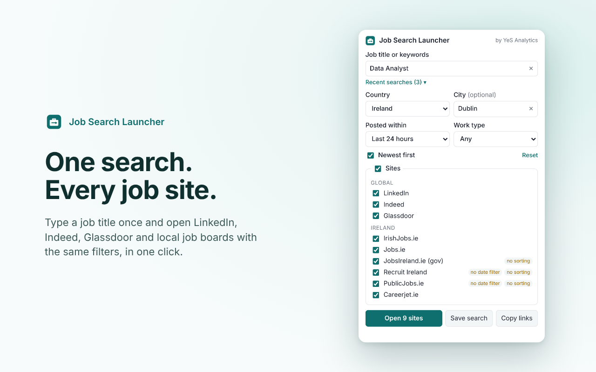
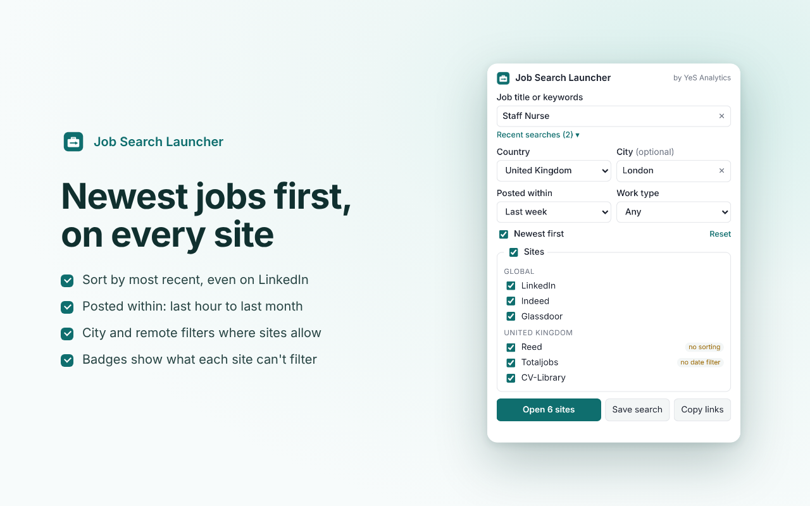
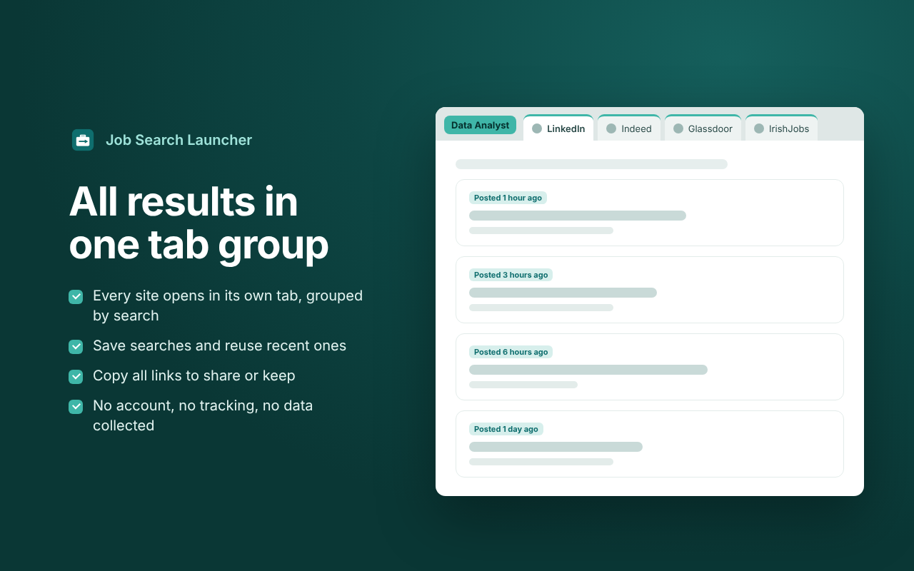

Type a job title once and open LinkedIn, Indeed, Glassdoor and local job boards with the same filters, in one click. Results open in one tab group, sorted by most recent wherever the site allows.
Free. No sign-up. No data collected.

Less typing, fresher jobs, no tab chaos.
Enter the job title, country, city, how recent the jobs should be and the work type once. The extension builds the right search link for each site and opens them all in one click.
Sorts by most recent wherever the site allows, including LinkedIn's classic search. Posted within: last hour, 24 hours, 3 days, week or month. A small label shows when a site cannot apply a filter.
All results open in one tab group named after your search. Recent searches, up to 20 saved searches, job title and city suggestions, and a tab that fails to load is reloaded automatically.


Global sites for 13 countries, plus local job boards for Ireland, the UK and Ukraine.
LinkedIn (13 countries), Indeed (12 countries) and Glassdoor (Ireland, UK, US).
IrishJobs.ie, Jobs.ie, JobsIreland.ie, PublicJobs.ie, Recruit Ireland and Careerjet.ie. In the UK: Reed, Totaljobs and CV-Library.
Work.ua, Robota.ua, Djinni and DOU, with each site's own spelling of 18 Ukrainian cities, so a city filter just works.
Missing a site or a country? Tell us.
It takes about a minute.
Yes. There is no sign-up, no ads and no paid tier.
No. Your searches stay in your own browser. The extension cannot read the pages you visit. It only notices whether its own tabs finished loading, so it can reload one that failed. Read the privacy policy.
The web version has the same sites and filters and works on phones too. But a web page may open only one tab per click unless you allow pop-ups, and it cannot group tabs. The extension opens every site in one click, puts them in one tab group and reloads tabs that fail to load.
No. It only opens the searches. You read the jobs and apply yourself, on each site, under your own account.
No. It is an independent free tool by YeS Analytics and is not affiliated with or endorsed by any job site listed. Questions or ideas: info@yes-analytics.com.
Missing a job site or a country? A link that opens the wrong search? An idea for the extension? Tell us. Every message is read.